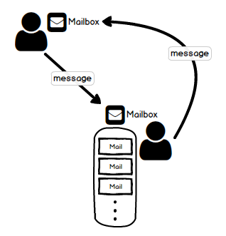
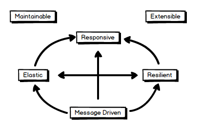
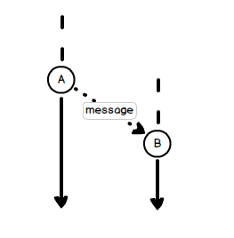

<!DOCTYPE html>
<html>
<head><meta name="generator" content="Hexo 3.8.0">
  <meta charset="utf-8">
  <title>Actor Model - 聊聊對 Actor Model 的理解 | The name is Alex</title>
  <meta name="viewport" content="width=device-width,initial-scale=1,maximum-scale=1,minimum-scale=1">
  <meta name="description" content="花了幾個月在工作上實際使用了 Actor Model 這個概念/技術來開發。想在這裡彙整一下關於 Actor Model 的一些認知與概念。同時也可以記錄一下，之後或許累積了更多的體驗後，再來回顧現在對於這個技術的理解，也是蠻有趣的一件事。  文中以習慣的中文書寫，然參考閱讀的影音資料多以英文為主。以我不才的語言能力，硬把它翻譯成中文可能會讓人一頭霧水，所以許多較為獨特的名詞後都會接著他原來英文的">
<meta name="keywords" content="actor-model">
<meta property="og:type" content="article">
<meta property="og:title" content="Actor Model - 聊聊對 Actor Model 的理解">
<meta property="og:url" content="http://alexpacer.github.io/posts/af2d802f/index.html">
<meta property="og:site_name" content="The name is Alex">
<meta property="og:description" content="花了幾個月在工作上實際使用了 Actor Model 這個概念/技術來開發。想在這裡彙整一下關於 Actor Model 的一些認知與概念。同時也可以記錄一下，之後或許累積了更多的體驗後，再來回顧現在對於這個技術的理解，也是蠻有趣的一件事。  文中以習慣的中文書寫，然參考閱讀的影音資料多以英文為主。以我不才的語言能力，硬把它翻譯成中文可能會讓人一頭霧水，所以許多較為獨特的名詞後都會接著他原來英文的">
<meta property="og:locale" content="tw">
<meta property="og:image" content="http://alexpacer.github.io/posts/af2d802f/actor-mailboxs.png">
<meta property="og:image" content="http://alexpacer.github.io/posts/af2d802f/reactivemanifesto.png">
<meta property="og:image" content="http://alexpacer.github.io/posts/af2d802f/a-message-b.png">
<meta property="og:updated_time" content="2019-10-21T07:41:12.814Z">
<meta name="twitter:card" content="summary">
<meta name="twitter:title" content="Actor Model - 聊聊對 Actor Model 的理解">
<meta name="twitter:description" content="花了幾個月在工作上實際使用了 Actor Model 這個概念/技術來開發。想在這裡彙整一下關於 Actor Model 的一些認知與概念。同時也可以記錄一下，之後或許累積了更多的體驗後，再來回顧現在對於這個技術的理解，也是蠻有趣的一件事。  文中以習慣的中文書寫，然參考閱讀的影音資料多以英文為主。以我不才的語言能力，硬把它翻譯成中文可能會讓人一頭霧水，所以許多較為獨特的名詞後都會接著他原來英文的">
<meta name="twitter:image" content="http://alexpacer.github.io/posts/af2d802f/actor-mailboxs.png">
  <link rel="icon" href="/favicon.ico">
  

  <link rel="stylesheet" href="https://cdnjs.cloudflare.com/ajax/libs/bulma/0.6.1/css/bulma.min.css">
  <link rel="stylesheet" href="https://maxcdn.bootstrapcdn.com/font-awesome/4.7.0/css/font-awesome.min.css">
  <link rel="stylesheet" href="/css/style.css">
  
    <link rel="stylesheet" href="/css/prism.css">
  
  
<script type="application/ld+json">
  {
  "@context": "http://schema.org",
  "@type": "BlogPosting",
  "headline": "Actor Model - 聊聊對 Actor Model 的理解",
  "name": "Actor Model - 聊聊對 Actor Model 的理解",
  "datePublished": "2019-10-17T02:07:22.000Z",
  "dateModified": "2019-10-21T07:41:12.814Z",
  "mainEntityOfPage": {
    "@type": "WebPage",
    "@id": "http://alexpacer.github.io/posts/af2d802f/index.html"
  },
  "author": {
    "@type": "Person",
    "name": "Alex Wei",
    "image": "/images/avatar.jpg"
  },
  "publisher": {
    "@type": "Organization",
    "name": "Alex Wei",
    "logo": {
      "@type": "ImageObject",
      "url": "/images/avatar.jpg"
    }
  }
}
</script>

  
  
    <script src="/js/prism.js"></script>
  
  <!-- <link href="/css/prism.css" rel="stylesheet" /> -->
  <link href="/css/prism-line-numbers.css" rel="stylesheet">
<link rel="stylesheet" href="/css/prism-twilight.css" type="text/css"></head>
</html>
<body>
  

  <header class="navbar" role="navigation" aria-label="main navigation">
  <div class="navbar-brand">
    <a href="/" class="navbar-item">
      The name is Alex
    </a>
  </div>
</header>

  <div class="container">
    <div class="columns">
      <div class="main column is-8">
        <article class="post">
  <figure class="post-thumbnail">
    

  </figure>
  <span>2019-10-17
</span>
  <h1 class="title">Actor Model - 聊聊對 Actor Model 的理解</h1>
  
  <div class="tags">
    
      <a class="tag" href="/tags/actor-model/">actor-model</a>
    
  </div>


  <div class="content">
    <p>花了幾個月在工作上實際使用了 Actor Model 這個概念/技術來開發。想在這裡彙整一下關於 Actor Model 的一些認知與概念。<br>同時也可以記錄一下，之後或許累積了更多的體驗後，再來回顧現在對於這個技術的理解，也是蠻有趣的一件事。</p>
<blockquote>
<p>文中以習慣的中文書寫，然參考閱讀的影音資料多以英文為主。以我不才的語言能力，硬把它翻譯成中文可能會讓人一頭霧水，所以許多較為獨特的名詞後都會接著他原來英文的名詞以便比對。<br>許多名詞實在不知道怎麼翻譯，像 Actor，就仍然以英文呈現了..</p>
</blockquote>
<h1 id="一些歷史背景"><a href="#一些歷史背景" class="headerlink" title="一些歷史背景"></a>一些歷史背景</h1><p>Actor Model 在70年代早期就已經被 Carl Hewitt 構思出來，將他應用在 Smalltalk 的訊息傳遞<code>語意</code>(semantics) 。時間點上，與物件導向出現的時間其實沒有相距很遠。考量到當時的時空背景的硬體能力，Actor 比起物件導向並沒有被廣泛的應用。一直到近代，CPU的速度其實沒有快很多，但是CPU由單核變成了很多核心可以同時處理許多工作。Actor Model的主要設計概念反而變得得很有效率了。</p>
<h1 id="Actors"><a href="#Actors" class="headerlink" title="Actors"></a>Actors</h1><p>Actor 是 Actor Model 裡的最基本的的單一的執行單位。就類似我們常用的 <code>執行緒</code>(Thread) 一樣。許多程式語言都有Actor Model的實作，像是 Java/Scala - Akka, .Net - Akka.Net，而像 Erlang 本身就是以 Actor Model 為基礎的語言。各種不同 Actor Model 的 Actor 都會有三種必要的元素：</p>
<ul>
<li><code>處理</code>、計算 (Process)</li>
<li><code>儲存</code> (State)</li>
<li><code>溝通</code> (Messaging)</li>
</ul>
<p>而一個 Actor Model 的系統裡會有很多個 Actor, 除了以上所提到的三個必要元素以外呢，Actor 也還會再有一些基本的屬性：</p>
<ul>
<li>Actor 的地址 (以便互相透過地址溝通)</li>
<li><code>信箱</code>(Mailbox)</li>
</ul>
<p>Actor 這個抽象的概念有定義一些 Actor 可以做什麼事情的<code>公理</code>(axioms) 讓實作 Actor Model 的人可以遵循：</p>
<ul>
<li>Actor 可以建立其他 Actor</li>
<li>Actor 可以透過其他 Actor 的地址傳訊息給對方</li>
<li>Actor 可以決定他收到訊息後要怎麼處理</li>
</ul>
<h2 id="共用狀態-Shared-State"><a href="#共用狀態-Shared-State" class="headerlink" title="共用狀態 (Shared State)"></a>共用狀態 (Shared State)</h2><p>說起 Actor Model，我想可以先談談<code>共用狀態</code>(Shared State)<sup id="fnref:1"><a href="#fn:1" rel="footnote">1</a></sup> 這件事。在物件導向的世界中，我們常會需要共用狀態。在單一個執行緒的狀況下，共用狀態的行為是很單純的，程式進行中依序取用&amp;修改共用狀態。但當我們有多個執行緒在共用同一個狀態時(例如，利用共用狀態來互相溝通)，我們就必須在個別執行緒拿取狀態時需要將其鎖上避免其他執行緒修改他。</p>
<pre class=" language-Csharp"><code class="language-Csharp">public void UpdateLocation(long l, long a) {
    lock(_lock){
        _latitude = l;
        _altitude = a;
    }
}
</code></pre>
<p>Java 也有好用的 <code>synchronized</code> 用來確保掛上 synchronized 的 method 同時只能有一個執行緒可以執行它。</p>
<pre class=" language-Java"><code class="language-Java">synchronized public void updateLocation(long l, long a) {
    _latitude = l;
    _altitude = a;
} 
</code></pre>
<p>Lock 確保了共用狀態不會被其他人修改造成不預期的意外，但相對的也限制了多執行緒的併行原則。以近代的CPU多核心多執行緒的硬體架構來看，硬體反而需要花費更多資源成本來<code>暫緩</code>(Suspend)執行緒，等待正在使用共用狀態的執行緒執行完成之後再回復執行被暫緩的執行緒。</p>
<p>另外，如果我們必須在一個分散式的系統共用狀態，那麼我們勢必得使用<code>分散鎖</code> (Distributed Lock)。儼然增加了程式的複雜程度，在 Review 程式碼的時候勢必會看到許多取得 Lock, 釋放 Lock 等等與商業邏輯無關的程式碼穿插其中。</p>
<p>所以，如果我們沒有<code>共用狀態</code>的話，我們要怎麼讓不同的執行緒互相溝通呢？</p>
<p>Actor Model 的設計就是在許多的執行緒(Actor)之間沒有使用<code>全域狀態</code>來互相溝通。運作起來有一點類似我們人類的溝通方式，執行緒之間彼此用訊息告知對方做某件事。收到訊息的執行緒根據訊息的內容處理。</p>
<h2 id="Actor-Model"><a href="#Actor-Model" class="headerlink" title="Actor Model"></a>Actor Model</h2><p>每個 Actor 都會有一個獨立的信箱，信箱與 Actor 是分開的。因為如果 Actor 因為錯誤而重新啟動的話，信箱裡未處理的信不會因為這樣而丟失。</p>
<p></p>
<h2 id="Reactive"><a href="#Reactive" class="headerlink" title="Reactive"></a>Reactive</h2><p>再來可以聊聊<code>反應式</code>(Reactive)系統，跟Agile一樣，反應式系統有個 <code>Reactive Manifesto</code>, 主要圍繞著四個重點，稍為的談談對於這幾個重點的理解。</p>
<p></p>
<h3 id="Responsive"><a href="#Responsive" class="headerlink" title="Responsive"></a>Responsive</h3><p>系統可以在短時間內快速反應是可用度與效能的的基石。但不只要注意短時間內反應，同時系統應該也要可以快速偵測出錯誤並且有效率的處理錯誤。有效率且可以快速反應的系統也應該要可以保持穩定的服務品質。</p>
<h3 id="Resilient"><a href="#Resilient" class="headerlink" title="Resilient"></a>Resilient</h3><p>系統應該要可經得起錯誤發生，並且要可以在錯誤發生後仍然可以做出回應。這樣的系統通常可會透過系統的 <code>複製</code> (replication)(壞掉其中一個另一個仍可以回應)、錯誤抑制、委派或是將系統切割成小的獨立的模組或元件，讓它不會因為一個錯誤而牽一髮而動全身。因為一個 Exception 就停止運作無法回應。</p>
<h3 id="Message-Driven"><a href="#Message-Driven" class="headerlink" title="Message Driven"></a>Message Driven</h3><p>我們將<code>元件</code>(Component)拆散成多個獨立元件後，元件之間就得依賴訊息的傳送彼此溝通。這類的方式通常是<code>非同步</code>(Asynchronous)的。也就是說，訊息傳送以後，呼叫端並不等待訊息回覆。而該訊息接收端處理玩訊息後，可以<code>通知</code>(Notify)呼叫端訊息處理完成，亦或是做其他處理。</p>
<p>當不同的元件獨立拆開來後，彼此就得透過<code>透明位址</code>(Location Transparency)<sup id="fnref:2"><a href="#fn:2" rel="footnote">2</a></sup>來傳送訊息給其他元件。同時運用<code>非阻檔</code>(Non-Blocking)<sup id="fnref:3"><a href="#fn:3" rel="footnote">3</a></sup> 的溝通方式，讓收訊息端只有在運作的時候才會實際使用到資源。</p>
<p>不同元件可以看成不同的 Actor ，我們要讓 Actor 動起來的做事情方法就是傳訊息給它。Actor 本身其實是一個簡單的物件。<code>A</code> Actor (物件) 丟一個訊息給 <code>B</code> Actor (物件) ，我們也可以想成 <code>A</code> 執行緒丟一個訊息給 <code>B</code> 執行緒。<code>B</code> Actor 收到訊息處理後可以等著繼續處理下一封訊息。 </p>
<p></p>
<h3 id="Elastic"><a href="#Elastic" class="headerlink" title="Elastic"></a>Elastic</h3><p>系統在承受不同流量大小下都可以保有快速反應。事實上反應式系統應該要可以在流量增減時候增減資源。要達到這樣的效果，系統裡不能有可能會造成資源搶奪或是資源瓶頸的設計。</p>
<p>困難的點在於雖然我們可以用預估系統流量的方式來評估系統架構，但是反應式系統應該要更能因應不同的流量與需求狀態被動的修正硬體與運算資源安排。</p>
<h2 id="不謀而合"><a href="#不謀而合" class="headerlink" title="不謀而合"></a>不謀而合</h2><p>近年來，我們需要以軟體處理的工作幾乎最後都會以可並行、分散式為目標。Actor Model 是以這針對這些需求為主軸而設計的<code>概念模型</code>(conceptual model)。這樣的設計與 Reactive 的系統有許多不謀而合的相同的地方。</p>
<p>我自己在實做這樣的系統時，有許多思考的方式也跟著改變。畢竟從業許多年都習慣的運作模式是<code>Request -&gt; Storage</code>在資料儲存後我們會透過存下來的資料來檢視目前的狀態。對於儲存資料會很著墨於儲存的方式，資料的拆分等等… 但如果用 Actor Model 的方式來思考，重要的地方反而是不同的 Actor 之間的的傳遞為主。</p>
<h3 id="References"><a href="#References" class="headerlink" title="References"></a>References</h3><ul>
<li><a href="https://en.wikipedia.org/wiki/History_of_the_Actor_model" target="_blank" rel="noopener">https://en.wikipedia.org/wiki/History_of_the_Actor_model</a> </li>
<li><a href="https://www.reactivemanifesto.org/" target="_blank" rel="noopener">Reactive Manifesto</a></li>
</ul>
<div id="footnotes"><hr><div id="footnotelist"><ol style="list-style:none; padding-left: 0;"><li id="fn:1"><span style="display: inline-block; vertical-align: top; padding-right: 10px;">1.</span><span style="display: inline-block; vertical-align: top;">State (狀態)是指我們的軟體會將發生過的事件儲存起來，被儲存的資料我們稱之為 State - &quot;狀態&quot;</span><a href="#fnref:1" rev="footnote"> ↩</a></li><li id="fn:2"><span style="display: inline-block; vertical-align: top; padding-right: 10px;">2.</span><span style="display: inline-block; vertical-align: top;">Location Transparency 是指可以讓訊息傳遞這項工作，不管是在本機，或是跨電腦<code>叢集</code>(Clustered)的多個不同的執行緒之間都可以溝通如一，不需要在程式裡另外判斷訊息如何透過哪種通訊協定傳遞給另一個元件。</span><a href="#fnref:2" rev="footnote"> ↩</a></li><li id="fn:3"><span style="display: inline-block; vertical-align: top; padding-right: 10px;">3.</span><span style="display: inline-block; vertical-align: top;">Non-Blocking 是指當執行緒都要存取相同資源(或同時執行)時，彼此的執行緒不會因為其他執行緒正在使用資源而被阻擋住。實際上來說，Non-Blocking 的 API 會讓在資源可用時讓執行緒存取資源，但資源不可用時，會及時<code>返回</code>(Return) 通知呼叫端資源目前無法存取，或是暫時保留呼叫端的指令，待資源變為可用時再執行該指令。這樣的演算法可讓執行呼叫的執行緒不需要花時間等待資源，可繼續往下執行他後續的工作。</span><a href="#fnref:3" rev="footnote"> ↩</a></li></ol></div></div>
  </div>
  
<nav class="footer-nav">
  
  
    <div class="footer-nav__next">
      <div class="footer-nav__label">
        較舊的那篇
      </div>
      <a href="/posts/d974dd78/">
        WebDeployment 的一些前置設定
      </a>
    </div>
  
</nav>


</article>


<div id="disqus_thread"></div>


      </div>
      <div class="sidebar column is-4">
        <aside>
  
    <aside class="search widget">
  <form action="//google.com/search" method="get" accept-charset="UTF-8" class="search-form" target="_blank">
    <div class="control has-icons-right">
      <input type="search" name="q" class="input" placeholder="搜尋">
      <span class="icon is-small is-right">
        <i class="fa fa-search"></i>
      </span>
    </div>
    <input type="hidden" name="sitesearch" value="http://alexpacer.github.io">
  </form>
</aside>

  
    <div class="widget-wrap">
  <div class="widget-title">作者</div>
  <aside class="profile media widget">
    <figure class="profile-avatar media-left">
      
    </figure>
    <div class="media-content">
      <p>
        <strong>
          <span>Alex Wei</span>
          <span class="icon">
            <a href="https://github.com/alexpacer" target="_blank">
              <i class="fa fa-github"></i>
            </a>
          </span>
        </strong>
        <br>
        <span></span>
      </p>
    </div>
  </aside>
</div>

  
    
  <div class="widget-wrap">
    <div class="widget-title">最近更新</div>
    <div class="widget">
      <ul class="recent-post">
        
          <li class="recent-post-item media">
            <figure class="media-left">
              

            </figure>
            <div class="media-content">
              <p class="">
                <a href="/posts/af2d802f/" class="">
                  Actor Model - 聊聊對 Actor Model 的理解
                </a>
              </p>
              <p class="">
                <small>
                  2019-10-17

                </small>
              </p>
            </div>
          </li>
        
          <li class="recent-post-item media">
            <figure class="media-left">
              

            </figure>
            <div class="media-content">
              <p class="">
                <a href="/posts/d974dd78/" class="">
                  WebDeployment 的一些前置設定
                </a>
              </p>
              <p class="">
                <small>
                  2019-06-21

                </small>
              </p>
            </div>
          </li>
        
          <li class="recent-post-item media">
            <figure class="media-left">
              

            </figure>
            <div class="media-content">
              <p class="">
                <a href="/posts/904aaacf/" class="">
                  ASP.net Core (2.2) 整理 1 :: [Auth &amp; Authorize]
                </a>
              </p>
              <p class="">
                <small>
                  2019-02-14

                </small>
              </p>
            </div>
          </li>
        
          <li class="recent-post-item media">
            <figure class="media-left">
              

            </figure>
            <div class="media-content">
              <p class="">
                <a href="/posts/17bf5966/" class="">
                  Windows Server 安裝 RabbitMQ
                </a>
              </p>
              <p class="">
                <small>
                  2018-12-12

                </small>
              </p>
            </div>
          </li>
        
          <li class="recent-post-item media">
            <figure class="media-left">
              

            </figure>
            <div class="media-content">
              <p class="">
                <a href="/posts/ebf2f33a/" class="">
                  Redis cluster on CentOs
                </a>
              </p>
              <p class="">
                <small>
                  2018-04-27

                </small>
              </p>
            </div>
          </li>
        
      </ul>
    </div>
  </div>


  
    
  <div class="widget-wrap">
    <h3 class="widget-title">標籤雲</h3>
    <div class="widget">
      <a href="/tags/net/" style="font-size: 10px;">.net</a> <a href="/tags/IIS/" style="font-size: 10px;">IIS</a> <a href="/tags/WebDeploy/" style="font-size: 10px;">WebDeploy</a> <a href="/tags/actor-model/" style="font-size: 10px;">actor-model</a> <a href="/tags/asp-net-core/" style="font-size: 10px;">asp.net-core</a> <a href="/tags/elk/" style="font-size: 10px;">elk</a> <a href="/tags/nginx/" style="font-size: 10px;">nginx</a> <a href="/tags/rabbit-mq/" style="font-size: 10px;">rabbit-mq</a> <a href="/tags/rails/" style="font-size: 20px;">rails</a> <a href="/tags/redis/" style="font-size: 10px;">redis</a> <a href="/tags/ruby/" style="font-size: 10px;">ruby</a> <a href="/tags/unit-testing/" style="font-size: 10px;">unit-testing</a> <a href="/tags/windows/" style="font-size: 10px;">windows</a>
    </div>
  </div>


  
    
  <div class="widget-wrap">
    <h3 class="widget-title">封存</h3>
    <div class="widget">
      <ul class="archive-list"><li class="archive-list-item"><a class="archive-list-link" href="/archives/2019/10/">October 2019</a><span class="archive-list-count">1</span></li><li class="archive-list-item"><a class="archive-list-link" href="/archives/2019/06/">June 2019</a><span class="archive-list-count">1</span></li><li class="archive-list-item"><a class="archive-list-link" href="/archives/2019/02/">February 2019</a><span class="archive-list-count">1</span></li><li class="archive-list-item"><a class="archive-list-link" href="/archives/2018/12/">December 2018</a><span class="archive-list-count">1</span></li><li class="archive-list-item"><a class="archive-list-link" href="/archives/2018/04/">April 2018</a><span class="archive-list-count">1</span></li><li class="archive-list-item"><a class="archive-list-link" href="/archives/2017/12/">December 2017</a><span class="archive-list-count">2</span></li><li class="archive-list-item"><a class="archive-list-link" href="/archives/2017/06/">June 2017</a><span class="archive-list-count">4</span></li></ul>
    </div>
  </div>


  
    <div class="widget-wrap">
    <h3 class="widget-title">連結</h3>
    <div class="widget">
        <ul style="list-style: circle">
            <li>
                <a href="https://blog.ryantseng.me/" class="">
                    Ryan - 不務正業 全端 開發記事
                </a>
            </li>

            <li>
                <a href="https://eugenesu0515.github.io/Blog/" class="">
                    Eugene
                </a>
            </li>
        </ul>
    </div>
</div>

  
</aside>

      </div>
    </div>
  </div>
  <footer class="footer">
  <div class="container">
    <div class="content has-text-centered">
      <p>
        <a rel="license" href="http://creativecommons.org/licenses/by-nc/4.0/"></a><br>This blog is licensed under a <a rel="license" href="http://creativecommons.org/licenses/by-nc/4.0/">Creative Commons Attribution-NonCommercial 4.0 International License</a>.


        <!--
          <br />
          <span xmlns:cc="http://creativecommons.org/ns#" property="cc:attributionName">Alex Wei</span>'s Workを著作者とするこの作品は<a rel="license" href="http://creativecommons.org/licenses/by-sa/4.0/">クリエイティブ・コモンズの 表示 - 継承 4.0 国際 ライセンス</a>で提供されています。 -->
      </p>
    </div>
  </div>
</footer>


  <script>
    var disqus_shortname = 'the-name-is-alex';
    
    var disqus_url = 'http://alexpacer.github.io/posts/af2d802f/';
    
    (function(){
      var dsq = document.createElement('script');
      dsq.type = 'text/javascript';
      dsq.async = true;
      dsq.src = '//go.disqus.com/embed.js';
      (document.getElementsByTagName('head')[0] || document.getElementsByTagName('body')[0]).appendChild(dsq);
    })();
  </script>


  
</body>
</html>
